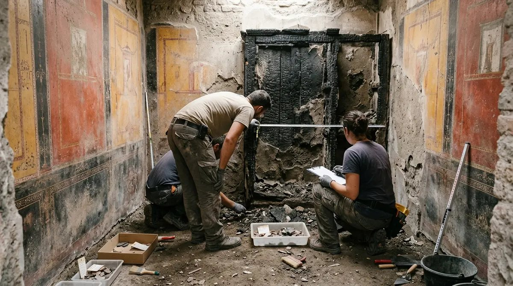
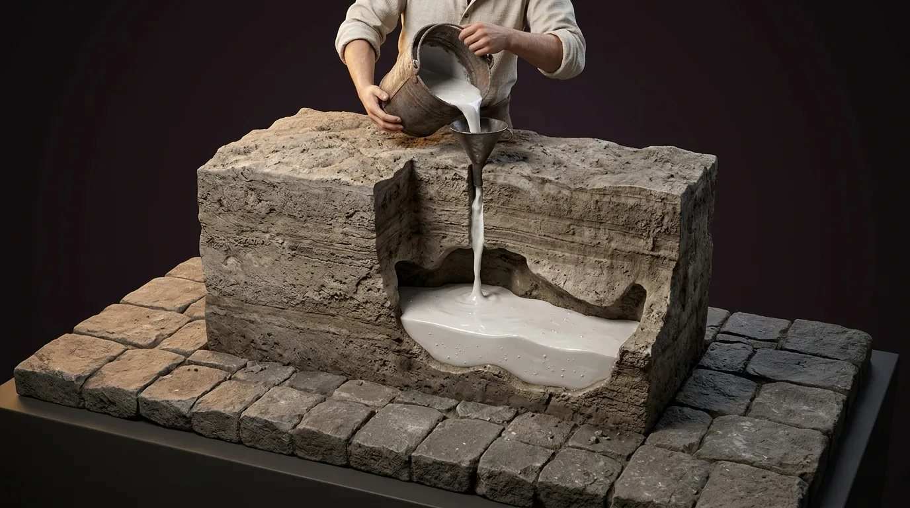
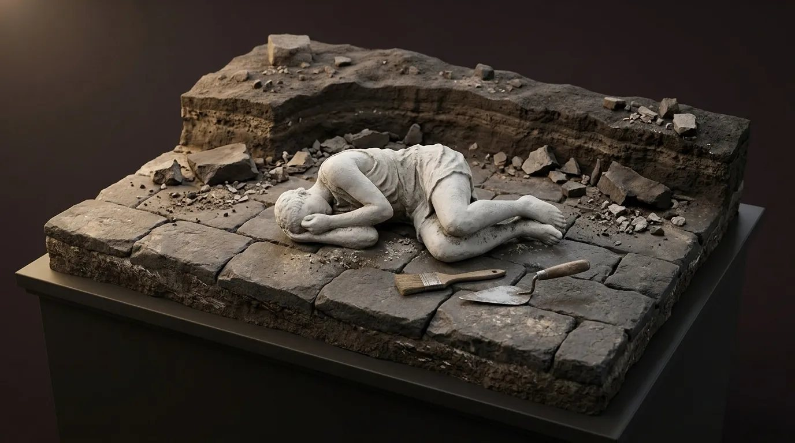

Los Calcos de Pompeya: Cómo Conocemos la Postura Exacta de las Víctimas del Vesubio
Quien visita Pompeya recuerda, sobre todo, a sus habitantes: figuras blancas encogidas, tapándose la cara, abrazadas o tendidas en el suelo. Parecen estatuas, pero no lo son. Son calcos: moldes de yeso que reproducen con una fidelidad estremecedora la postura de las víctimas en el momento de morir. Detrás de ellos hay una idea ingeniosa y un arqueólogo decidido.
Lo que dejó la ceniza
En el año 79 d.C., el Vesubio sepultó Pompeya bajo varios metros de piedra pómez y ceniza. Las nubes ardientes que bajaron del volcán mataron a quienes no habían huido, y la ceniza fina que las acompañaba envolvió sus cuerpos. Con el tiempo, esa ceniza se endureció como una roca, mientras los cuerpos se descomponían en su interior. El resultado fue un molde perfecto: un hueco con la forma exacta de cada persona.
Durante las primeras excavaciones, en el siglo XVIII, los obreros encontraban a veces esas cavidades con huesos en el fondo, pero se rompían al excavar y nadie sabía cómo aprovecharlas.

La idea de Giuseppe Fiorelli
En 1863, el arqueólogo Giuseppe Fiorelli, director de las excavaciones, tuvo una idea sencilla y brillante. Cuando los obreros detectaban una cavidad, se detenían. Se perforaba un pequeño orificio en la capa de ceniza y se vertía por él yeso líquido hasta llenar el hueco. Una vez fraguado, se retiraba con cuidado la ceniza de alrededor. Lo que aparecía era una figura humana con la forma exacta del cuerpo, que conservaba el esqueleto en su interior.
Los primeros calcos mostraron detalles impensables: los pliegues de la ropa, las sandalias, los rasgos de los rostros, las manos que se protegían de los gases. El método se convirtió en la firma de Pompeya y se usó también para reproducir objetos de madera desaparecidos, como puertas, muebles y raíces de árboles.
Lo que los calcos todavía nos cuentan
Hoy se conservan alrededor de un centenar de calcos humanos, y siguen siendo objeto de investigación. En 2015 se sometieron a tomografías y radiografías que permitieron estudiar los huesos y los dientes sin romper el yeso. En 2024, un estudio de ADN publicado en Current Biology analizó restos de varios calcos y mostró que algunas historias que se contaban sobre ellos eran falsas: por ejemplo, un adulto que sostenía a un niño, considerado durante décadas su madre, resultó ser un hombre sin parentesco con el pequeño.
Los calcos, por tanto, no son solo una imagen del pasado: son también una lección sobre cómo proyectamos nuestras propias ideas en él. La ciencia sigue corrigiendo lo que creíamos saber.

Por qué importa
Pompeya no es una ruina corriente: es una ciudad detenida en un instante. Los calcos son la parte más humana de ese instante. Fiorelli no rellenó solo huecos: devolvió una forma humana a las víctimas del Vesubio, y con ella la posibilidad de mirarlas a los ojos dos mil años después.
"Fiorelli no rellenó solo huecos: devolvió una forma humana a las víctimas del Vesubio."
— Memorias del Pasado
Fuentes y referencias
- Giuseppe Fiorelli, Giornale degli scavi di Pompei, 1863
- Parco Archeologico di Pompei, proyecto de restauración y estudio de los calcos (2015)
- Elena Pilli, Alissa Mittnik, David Caramelli, David Reich et al., Current Biology, 2024